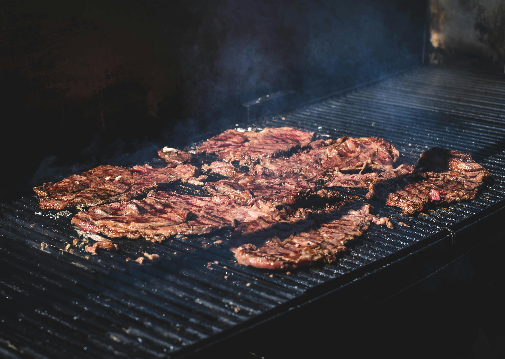

Carne Asada

Ingredients
Marinade
- 3/4 cup orange juice
- 1/2 cup lemon juice
- 1/3 cup lime juice
- 1 bunch fresh cilantro (chopped)
- 1/2 cup soy sauce, 4 garlic cloves
- 1 tablespoon shili powder
- table spoon ground cumin
- 1 tablespoon ground paprika
- 1 tablespoon ground black pepper
- 1 teaspoon finely chopped canned chipotle pepper
- 1 teaspoon dried oregano
- 1/2 cup olive oil
Carne Asada
Directions
Step 1
Combine orange juice, lemon juice, and lime juice for marinade in a large glass
or ceramic bowl. Add cilantro, soy sauce, garlic, chili powder, cumin, paprika,
black pepper, chipotle pepper, and oregano; stir to combine.
Step 2
Slowly whisk in olive oil until well combined. Remoce 1 cup of the marinade and place in a small bowl;
cover with plastic wrap and refrigerate for use after the steak is cooked.
Step 3
Place steak between two sheets of heavy plastic (resealable freezer bags work well) on a solid,
level surface. Firmly pound steak with the smooth aside of a meat mallet to a thickness of 1/4 inch.
Step 4
After pounding, poke steak all over with a fork. place steak in the marinade in
the large bowl, cover, and marinate in the refrigerator for 24 hours.
Step 5
When ready to cook, preheat an outdoor grill for medium-high heat, and lightly oil the grate.
Step 6
Remove steak from the marinade and shake off excess. Discard the remaining marinade.
Step 7
Coook steak on the preheated frill to desired doneness, about 5 minutes oer side for medium rare.
Step 8
Remove steak from grill and slice across the grain.
Step 9
Place on a serving platter and pour the reserved, unused marinade over top. Serve immediately.
Home